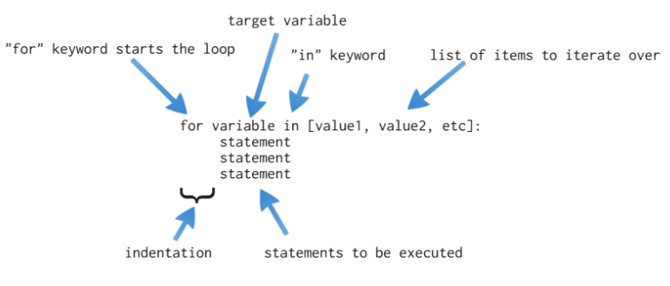

class: center, middle # For Loops ## or count controlled repetition .author[ CORE-UA 109.01, Joanna Klukowska <br> adapted from slides for CSCI-UA.002 by D. Engle, C. Kapp and J. Versoza ] --- # let's start with an example Write a program that prints numbers from 0 to 9, each on a new line. -- .left-column2[ ```python print("0") print("1") print("2") print("3") print("4") print("5") print("6") print("7") print("8") print("9") ``` ] -- .right-column2[ ```python for i in range(0,10,1): print(i) ``` ] -- .below-column2[ - which of the two programs do you prefer? - which of them is easier to write? - would your answer be the same if you needed to write a program that printed values from 0 to 1000? ] --- class: center, middle .section[ # `for` loop statement ] --- # examples of `for` loops .left-column2[ ```python for num in [1,2,3,4,5]: print ("This will print 5 times") ``` Output: ``` This will print 5 times This will print 5 times This will print 5 times This will print 5 times This will print 5 times ``` ] -- .right-column2[ ```python primes = [2,3,5,7,11,13,17,19,23,29] num = 4 for prime in primes: print (num, "*", prime, "=", num*prime) ``` Output: ``` 4 * 2 = 8 4 * 3 = 12 4 * 5 = 20 4 * 7 = 28 4 * 11 = 44 4 * 13 = 52 4 * 17 = 68 4 * 19 = 76 4 * 23 = 92 4 * 29 = 116 ``` ] --- # examples of `for` loops ```python available_toppings = ['mushrooms', 'olives', 'green peppers', 'pepperoni', 'pinapple', 'extra cheese'] requested_toppings = ['mushrooms', 'sausage', 'Olives'] for topping in requested_toppings: if topping in available_toppings : print ('Adding', topping, '.') else: print ("Sorry, we don't have", topping, ".") print("\nFinished making your pizza.\nEnjoy!") ``` Output: ``` Adding mushrooms . Sorry, we don't have sausage . Sorry, we don't have Olives . Finished making your pizza. Enjoy! ``` --- # syntax .center[  ] - the statements in the loop run multiple times - each time the `variable` takes on a different value from the list `[value1, value2, etc]` - on the first iteration `variable` is equal to `value1` - on the second iteration `variable` is equal to `value1` - on the third iteration `variable` is equal to `etc` --- # lists in Python __Lists__ in Python are defined by the square bracket characters `[` and `]`. Items in a list are separated by a comma. There are several ways of creating a __list__ in Python. - enumeration: simply enumerate values for the list inside square brackets; the values are separated by commans - `grades = ['a', 'b', 'c', 'd', 'f']` - `primes = [2,3,5,7,11,13,17,19,23,29]` - `friends = ['Alice', 'John', 'Mary'] ` - `random_things = [3.14, 'quiz3', 45, 'long weekend', 6.7]` -- - return value from a function: many functions return a list when called; one such example is the `range()` function - `range(0,10,1)` returns `[0, 1, 2, 3, 4, 5, 6, 7, 8, 8]` - `range(0,20,2)` returns `[0, 2, 4, 6, 8]` - `range(10)` returns `[0, 1, 2, 3, 4, 5, 6, 7, 8, 8]` - `range(-10, 11, 5)` returns `[-10, -5, 0, 5, 10]` -- .center[What do you think the rules for this `range()` function are?] --- # `range()` function - the __`range()`__ function lets you dynamically generate lists based on criteria that you define - well, technically `range()` function returns an iterable not a list - the `for` loop does not care which of the two it uses - in any other context, you can create the list out of an iterable using the `list()` function, for example `list(range(1,10,1))` --- # `range()` function - when __called with one argument `range( n )`__ it returns a list that contains all the numbers starting from `0` up to (but not including) `n` - `range(5)` returns `[0, 1, 2, 3, 4]` - `range(-5)` returns `[]` - an empty list -- - when __called with two argumets `range( n1, n2 )`__ it returns a list that contains all the numbers starting from `n1` up to (but not including) `n2` - `range(2,7)` returns `[2, 3, 4, 5, 6]` - `range(-99, -95)` returns `[-99, -98, -97, -96]` -- - when __called with three arguments `range(n1, n2, diff)`__ it returns a list that contains all the numbers starting from `n1` up to (but not including) `n2` in increments of `diff` - `range(-10, 11, 5)` returns `[-10, -5, 0, 5, 10]` - `range(0, 10, 3)` returns `[0, 3, 6, 9]` - `range(1,1000,100)` returns `[1, 101, 201, 301, 401, 501, 601, 701, 801, 901]` - `range(0, -10, -2)` returns `[0, -2, -4, -6, -8]` -- - when __called with four arguments__ ... - it produces an error message: <br> `TypeError: range expected at most 3 arguments, got 4 ` --- # try it yourself .left-column2[ - write a program that calculates the squares of the numbers between 1 and 10 - the output of this program should be ``` num num^2 ============= 1 1 2 4 3 9 4 16 5 25 6 36 7 49 8 64 9 81 10 100 ``` ] .right-column2[ - write a program that calculates the cubes of the even numbers starting at 20 and going down to 0 - the output of this program should be ``` num num^3 ============= 20 8000 18 5832 16 4096 14 2744 12 1728 10 1000 8 512 6 216 4 64 2 8 0 0 ``` ] --- # mixing loops and conditionals ```python for num in range(1,11,1): if num % 2 == 0 : print (num, "is even") else : print (num, "is odd") ``` - what will the above program produce? -- Output: ``` 1 is odd 2 is even 3 is odd 4 is even 5 is odd 6 is even 7 is odd 8 is even 9 is odd 10 is even ``` --- # nesting loops __nested loops__ are loop that are inside other loops ```python for num1 in range(1,11,1): for num2 in range (1,11,1): print (num1*num2,end="\t") print() ``` - what will the above program produce? -- Output ``` 1 2 3 4 5 6 7 8 9 10 2 4 6 8 10 12 14 16 18 20 3 6 9 12 15 18 21 24 27 30 4 8 12 16 20 24 28 32 36 40 5 10 15 20 25 30 35 40 45 50 6 12 18 24 30 36 42 48 54 60 7 14 21 28 35 42 49 56 63 70 8 16 24 32 40 48 56 64 72 80 9 18 27 36 45 54 63 72 81 90 10 20 30 40 50 60 70 80 90 100 ``` - it's a multiplication table (although the labels for rows and columns are missing) - __challenge:__ modify the program to add labels to each row and column --- #using loops to _accumulate_ values What do you think this program does? ```python sum = 0 for num in range(1,101): sum = sum + num print (sum ) ``` -- Output ``` 5050 ``` - The program computes the sum of all the numbers from 1 to 100. - We will often talk about variable like `sum` as an _accumulator_ because we _accumulate_ all the values from 1 to 100 in `sum` --- # user provided number of repeats - the user can determine the number of times some task is repeated ```python height = int(input('How tall do you want this ladder to be?')) for i in range(height): print('========\n| |') ``` .left-column2[ Interaction 1: ``` How tall do you want this ladder to be? 3 ======== | | ======== | | ======== | | ``` ] .right-column2[ Interaction 2: ``` How tall do you want this ladder to be?5 ======== | | ======== | | ======== | | ======== | | ======== | | ``` ] .below-column2[ - the loop is repeated a different number of time dending on the user's response ] -- - Can you think of a program that performs the same task without using a loop? --- class: center, middle .section[ # programming challenges ] --- # prime numbers? Write a program that prompts the user for a positive number. The program should determine if the number is a prime. __Prime__ numbers are the numbers that are divisible only by 1 and itself. For example 7 is prime since the only numbers that divide it (without a remainder) are 1 and 7: ``` 7 / 1 = 7.0 <=== no remainder 7 / 2 = 3.5 7 / 3 = 2.33333333333 7 / 4 = 1.75 7 / 5 = 1.4 7 / 6 = 1.16666666666 7 / 7 = 1.0 <=== no remainder ``` --- # average scores Write a program that allows you to calculate average of your quiz grades. The program should prompt the user for 5 grades and then compute their average (add all grades together and divide by 5). Assume that the scores are always between 0 and 10. Version 2: add verification of the user input, i.e., check if the user entered a score between zero and 10, and if not, print an error message --- # stair steps - Write a program that prints out the following pattern of characters: ``` ++ ++++ ++++++ ++++++++ ++++++++++ ++++++++++++ ``` - Write a program that prints out the following pattern of characters: ``` ++ ++++ ++++++ ++++++++ ++++++++++ ++++++++++++ ``` - Rewrite the above programs to take the number of rows in the pattern from the user. --- # divisibility testing Write a program that asks the user to enter in an integer. The program should then find all numbers between 1 and 10,000 that are evenly divisible by that number. --- # fizz buzz Write a program that prints out numbers 1 to 100 with the following exceptions: - for multiples of three, print out "Fizz" instead of the number - for multiples of five, print out "Buzz" instead of the number - for multiples of both three and five print “FizzBuzz” Example output on the next slide. --- # fizz buzz - output ``` 1 2 Fizz 4 Buzz Fizz 7 8 Fizz Buzz 11 Fizz 13 14 FizzBuzz 16 ... 88 89 FizzBuzz 91 92 Fizz 94 Buzz Fizz 97 98 Fizz Buzz ```